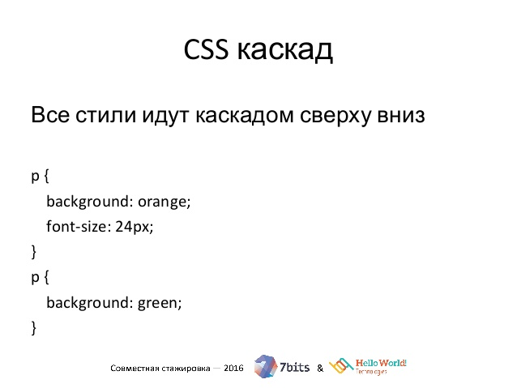

Что такое CSS
CSS (Cascading Style Sheets, каскадные таблицы стилей) — язык описания внешнего вида HTML-документа. Это одна из базовых технологий в современном интернете. Практически ни один сайт не обходится без CSS, поэтому HTML и CSS действуют в единой связке.
Каскадные таблицы стилей работают с HTML, но это совершенно другой язык. HTML структурирует документ и упорядочивает информацию, а CSS взаимодействует с браузером, чтобы придать документу оформление.
На языке HTML мы создаем размеченный текст — документ с гиперссылками, таблицами, маркированными списками, разными начертаниями шрифтов, заголовками, подзаголовками и так далее. Получаем «простыню» текста с таблицами и иллюстрациями.
Поэтому берем HTML-основу — и подключаем к ней стиль CSS. С помощью CSS красиво оформляем существующий текст, то есть прописываем уникальные свойства элементам HTML.
Как работает CSS
Синтаксис CSS
У языка CSS относительно простой синтаксис. Сначала прописывается селектор — он выбирает конкретный элемент на странице. Потом, после фигурных скобок, указываются свойства со значениями — между ними ставится двоеточие. Сами свойства отделяются друг от друга точкой с запятой.

Что такое селектор в CSS? Это конструкция, которая позволяет выбрать отдельные или однотипные элементы на странице, чтобы их стилизовать. С селектора начинается каждый блок объявлений в CSS:
Каскады в CSS
И всё-таки почему CSS — это именно Cascading Style Sheets? Дело в том, что в единую схему стили организуются при помощи каскада. Вот простой пример, который также поможет понять, что такое CSS-код и как он выглядит:

Классы в CSS
Классы применяют, когда необходимо определить стиль для индивидуального элемента веб-страницы или задать разные стили для одного тега. При использовании совместно с тегами синтаксис для классов будет следующий.
Классы удобно использовать, когда нужно применить стиль к разным элементам веб-страницы: ячейкам таблицы, ссылкам, абзацам и др.
Идентификаторы в CSS
Идентификатор (называемый также «ID селектор») определяет уникальное имя элемента, которое используется для изменения его стиля и обращения к нему через скрипты.
Обращение к идентификатору происходит аналогично классам, но в качестве ключевого слова у тега используется атрибут id, значением которого выступает имя идентификатора. Символ решётки при этом уже не указывается.
Селекторы в CSS
В качестве селектора может выступать любой элемент HTML, для которого определяются правила форматирования, такие как: цвет, фон, размер и др.